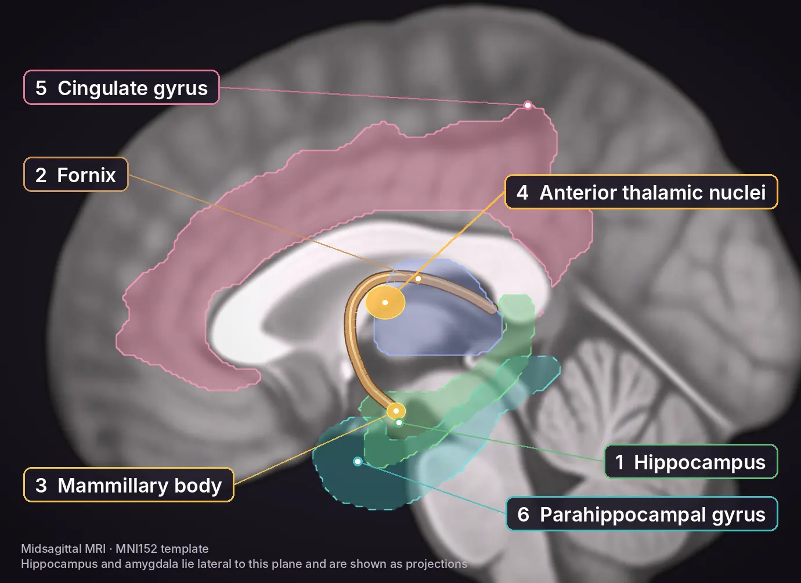

Explore the shapes. Make the connections.
Six ways to practise neuroanatomy: take levelled quizzes on real MRI slices, label and build on a real MRI-based brain, place real BodyParts3D structures, inspect them in 3D, or trace a circuit.
Nothing completed yet. Start your first round to earn stars, XP and badges.
Left lateral view rendered from the MNI152 MRI template (surface) and the AAL atlas (lobes and deep structures). Deep structures are shown as if through a transparent brain. Hypothalamus position is approximate. A teaching illustration, not a diagnostic atlas.
Drag or swipe the model to rotate it. This is a projected mesh viewer, not a surgical-grade atlas.
Recognition challenge
Hide the name, explore the shape, and reveal the structure when ready.
Put the memory structures back.
Place the left hippocampus, left amygdala and left thalamus into their anatomically grounded positions. Their contours and relative positions come from your uploaded BodyParts3D meshes. The flat view is a teaching projection, not a full brain reconstruction.
Drag a piece into its outline, or choose a piece and use the arrow keys plus Enter. Undo is available if you make a mistake.
0 / 3 correctly placed
Move the selected mesh to the matching silhouette.
Choose a structure to begin.
Great work. These are three distinct left-hemisphere structures. Their relative positions are derived from the source models; this projection is not a single anatomical slice.
What is anatomically accurate here?
The colored shapes are projections of the actual user-supplied BodyParts3D OBJ meshes for FJ1759 (left hippocampus), FJ1753 (left amygdala), and FJ1782 (left thalamus). Projection preserves the shared source coordinate system in the Y–Z plane, and target locations are derived from source coordinates. Mesh triangles were sampled in v28 for lightweight web rendering. No surrounding brain tissue, axons or connections are claimed. The teaching projection intentionally does not imply that these structures lie in a single anatomical section.
Scientific limits & licensing
BodyParts3D FJ series, compatibility version 4.0. Each uploaded OBJ explicitly declares “Creative Commons Attribution-Share Alike 2.1 Japan”. Attribution: BodyParts3D, (c) The Database Center for Life Science, licensed under CC Attribution-Share Alike 2.1 Japan. This license has Share-Alike requirements for adaptations. Geometry is surface anatomy only: no neuron-scale layers, axonal connections, or proof of functional pathways. Sampled triangles are used for performance; original OBJ files are retained separately.
Source: BodyParts3D license. Identification uses each uploaded OBJ file's own English name, representation ID, and FMA concept ID.
Connect the Circuit
Help Neuri trace a simplified route through the Papez memory circuit. Choose the next structure in the chain.
Conceptual connection sequence, not an anatomical route or coordinate map. The full Papez circuit includes additional links and is not a complete explanation of memory.
Which structure comes next?
Choose a structure to continue the journey.
Explore Library
Pick a topic and start anywhere. No chapters to unlock and no story prerequisites.
Choose your level
Your level sets how the Library lessons are written. Worlds, the Memory Garden and Smart Quiz have one level for now.
Learning content is introductory, not a substitute for a full course or a detailed anatomical atlas. Advanced modules will be added after expert review.
Take a walk through your own brain.
Neurilands is a story game for learning real neuroanatomy. Neuri, a tiny neuron, is lost in the brain, and every landmark you learn helps him find his way home.
Neuri’s journey map
Sixteen little worlds, one curious neuron. Start with the Memory Garden.
Brain systems
Ten more worlds, each with four short stations and a boss.
Practice and collect, whenever you like
These places are outside the story journey. Visit them any time, without affecting the order of your adventure.
The Memory Garden
Neuri is lost in the brain. Follow his memory trail: every landmark you learn gives him a piece of his map.
Neuri’s lost message
“I was carrying a memory across the brain, and I got lost. I remember a curved structure, a long cable and a tiny relay… but not the order.”
Each stop teaches where a structure is, what it does, and what happens when it is damaged. No prior knowledge needed.
Neuri is a fictional guide. The anatomy is real and simplified for first-time learners.How would you like to begin?
Follow Neuri through the story, or practice what you already know.
A reference map derived from open anatomical models. You can return to it whenever you want to review the pathway and labels.

Your brain atlas
Anatomical atlas by itayinbarr / Brain Project. Viewer code: Apache 2.0. Anatomy assets: CC BY-SA 4.0, credited to Z-Anatomy, BodyParts3D and DBCLS. The viewer is embedded from the original project; its controls and colors are maintained by its authors.
Neuri’s travel journal
Everything you have explored, learned and collected.
A cozy map of your progress
This little journal keeps track of the places you have visited with Neuri, the anatomy practice you have completed, and the tiny discoveries you have picked up on the way.
Thank you for helping me find my way. Every page here is one we filled together. 🌷
- Current feelingA little curious and very cozy
- Travel companionNeuri the neuron
- Best way to use this pageHop between tabs whenever you want a quick recap
Journey log
Your stops in the Memory Garden.
Brain discoveries
What you have learned so far. New pages appear as you play.
Achievement keepsakes
Every badge you have earned.
Choose a badge to see how you earned it.
Adventure achievements
Earn badges by exploring Memory Garden and finishing the practice quiz.
Anatomy achievements
Badges unlocked in Anatomy Puzzle Lab are recorded here too.